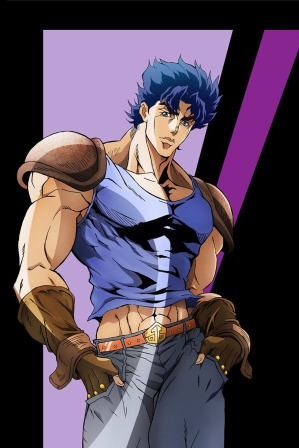
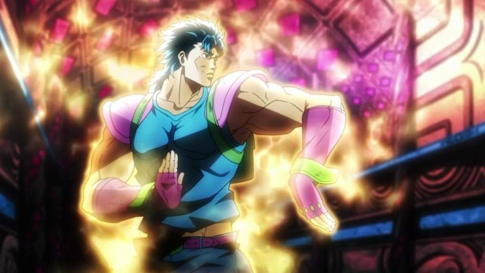
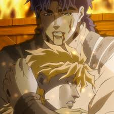
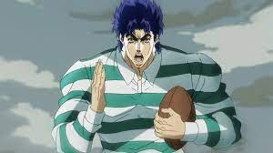

Джонатан Джостар - це головний протагоніст першої частини серії Неймовірні пригоди ДжоДжо, Примарна кров, і перший ДжоДжо. Його спадщина поширюється майже на всі перші шість частин серії, його нащадками є такі персонажі, як Джозеф Джостар та Джотаро Куджо.
Джонатан – син багатого бізнесмена Джорджа Джостара I та Мері Джостар. Він чесна, добра і позитивна людина, життя якої обертається трагедією після зустрічі з його прийомним старшим братом – та антагоністом серії – Діо Брандо. У боротьбі з Діо Джонатан стає користувачем Хамон під керівництвом свого вчителя Вілла Антоніо Цеппелі.
Джонатан является биологическим отцом Джорно Джованны, главного протагониста Золотого ветра, а также нескольких других незаконнорождённых детей.
Будучи двадцятирічним дорослим, Джонатан – високий (195 см), неймовірно м'язистий чоловік із джентльменською поставою. Його типове вбрання, як правило, відображає його шляхетне походження, що характеризується стилізованими туніками поверх сорочок з довгими рукавами. Повторювані предмети одягу включають краватку, краватку-метелика, товсті черевики та жилет.
Автор манги Хірохіко Аракі зазначив, що через щотижневий формат серіалу початковий регрес Джонатана, коли Діо перетворив щасливе життя Джонатана на труднощі, означав, що зростання Джонатана залишалося негативним протягом декількох тижнів після прем'єри серіалу, що призвело до негативного відчуття, що Джон програє. Аракі застосував аналогічну криву зростання для Діо, хоча той сходив до зла. Незважаючи на те, що Аракі дотримувався правила постійно прогресуючого героя, він вирішив змінити це правило і змусити Джонатанапомерти, щоб врятувати свою дружину і дитину: він визнав, що смерть настільки негативна, наскільки це можливо для героя, і назвав це немислимою річчю в сенен-манзі, але сказав, що, оскільки він хотів передати родовід сім'ї Джостарів, йому потрібно, щоб Джонатан помер, а його кров та дух були передані Джозефу, головному герою Battle Tendency, другої частини франшизи. Назвавши це азартною грою, він назвав цю передачу естафети позитивним моментом, який дозволяє вкрай негативний ефект вбивства першого головного героя.
Хамон

Хамон (波紋 Hamon, букв. Пульсація?) – це енергія, яка використовується у стародавній формі бойових мистецтв. Спочатку відомий як Sendō (仙道 букв. "Шлях самітника/чарівника"?).
За допомогою самоконтролю дихання, навчена людина може виробляти енергію, що проявляється у вигляді пульсації по всьому тілу, яка ідентична енергії Сонця, здатної протистояти енергії, що випромінюється Вампірами, Зомбі та Людьми з колон.
Служить основним елементом у двох частинах – Примарна кров та Бойове прагнення, виконуючи роль здібності, яку використовують головні герої. Також використовувався в Хрестоносцях зоряного пилу і технічно був присутній у Незламному Алмазі.
Хамон базується на використанні енергії сонячних променів за допомогою дихання та заповнення тіла сонячною енергією. Для використання Хамон необхідно пройти спеціальне навчання з контролю дихання. Однак не всі здатні використовувати Хамон, як говорив Цепелі, лише один із десяти тисяч здатний володіти Хамоном, і головна характеристика оволодіння Хамоном - это давление, которое испытывал человек, проходя сквозь жестокие ситуации в своей жизни. Но даже люди, не испытавшие ударов судьбы, все еще могут овладеть Хамоном, но в очень незначительной степени.
Історія

Головний герой Phantom Blood, Джонатан - син Джорджа Джостара I, який з гордістю носить своє прізвище, намагаючись бути джентльменом, який ніколи не зраджує своєму кодексу честі і захищає тих, хто його потребує, навіть коли він перебуває в вкрай невигідному становищі. Він пристрасна людина, він хоче бути найкращим у всьому, що він робить, чи то бійки, чи навіть манери за столом. Життя Джонатана перетворюється на одну з страждань, коли Діо Брандо усиновлюється Джорджем, що зрештою призводить до смерті батька, оскільки Діо намагався вбити їх обоих. Це спонукає Джонатана дізнатися, як використовувати енергію Хамона від Уїлляма Антоніо Цепелі, щоб звести рахунки з Діо, хоча його сила пізніше різко зростає, коли вмираючий Цепелі передає йому Хамона, що залишився. Хоча Джонатан перемагає Діо і одружується зі своєю коханою дитинства, Еріне Пендлетон, яка народжує його сина Джорджа Джостара II, він, тим не менш, смертельно поранений відрубаною головою Діо під час спроби забрати його тіло. Джонатан зрештою вмирає від отриманих травм, але не раніше, ніж ще більше ранить і без того сильно ослабленого Діо і використовує свій Хамон, щоб викликати вибух на кораблі, на якому вони з Еріною подорожують, на борту, причому Джонатан успішно переконує Еріну втекти разом з немовлям, що осиротіло завдяки Діо, який потім використовуватиме труну як імпровізовану рятувальну шлюпку.
Незважаючи на свою смерть, Джонатан мав вплив майже на весь серіал після цього; це найбільш помітно в Stardust Crusaders, де з'ясовується, що Діо вдалося видалити голову Джонатана та отримати його тіло як власне. Після повернення Діо будить свій стенд, хоча це безпосередньо пробудило одного з них у тілі Джонатана і побічно пробудило стенди в нащадках Джонатана, що, у свою чергу, надає руху сюжету частини. Однак останнє зусилля Джонатана не було марним, оскільки воно послабило Діо настільки, що йому знадобилася кров нащадка Джостара, щоб повністю злитися з тілом Джонатана і отримати належний контроль над його відповідним стендом.

Крім Stardust Crusaders, вплив Джонатана є, але дуже тонко, в трьох інших частинах серіалу. У Battle Tendency його дуже могутній Хамон призводить до того, що його онук Джозеф не тільки успадкував здатність використовувати Хамона, але й мав вроджену здатність до нього. Сирота, яку Джонатан попросив врятувати Еріну, також виявляється Елізабет «Ліза Ліза» Джостар, яка стала дружиною його померлого сина Джорджа II, матері Джозефа та експерта з Хамона. У Golden Wind з'ясовується, що Джонатан є біологічним батьком головного героя частини, Джорно Джованни, через запліднення Діо японської жінки черездеякий час після його повернення. У Stone Ocean троє антагоністичних користувачів стенду (Донателло Версус, Рікіель та Унгало) також є біологічними синами Джонатана, хоча їх особи засновані на певних аспектах особистості Діо і не мають жодного впливу з боку Джонатана.